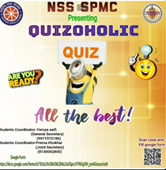

NSS SPMC - QUIZOHOLIC
QUIZOHOLIC is one of the events hosted by our NSS-SPMC which took place on 29th August,2020 at D2C platform. The event saw participation of students from all around India. We got 404 registrations for the event out of which 217 registered Participants participated in the quiz. The quiz was primarily being a general awareness quiz, also branches out into other spheres such as popular culture, literature, science and business & technology amongst others along with problem solving links and knowledge from each field. This makes it have a diverse question set that attracts people from beyond the organisation.It had two rounds- a preliminary one and an advanced one where people were only allowed to participate alone. The top 43 performers of the first round were qualified for the final round. Both the quiz was in MCQ format.

Preliminary Round-30 question, Time: -10 minutes
Domain: - General Interest and current issues
Advanced round: -30 question, Time: - 8 minutes
Domain: - General Interest and Current IssuesQuizzing is often misconstrued as a field of "know it all's" but most certainly is not. We conducted it with a bunch of fun and (if we may speak for ourselves) curious people who are" in-quiz-itive" and love not only to answer but also to ask questions. We discussed almost everything like a planning session. Our NSS TEAM mainly conducted this quiz named QUIZOHOLIC in a very friendly way and that was our only objective to get a good interaction. Participation in quizzes in and around many organisations are often misconstrued. Our objective was to prove to people that quizzing is quite often looked at through gender biased lenses. We served with the objective that "Come join us, if you are plagued by sustained curiosity and if you find it difficult to put down your thinking caps!"
As a team, organisational values become important at the same time providing good place to showcase your talents is equally important. For a perfect functioning of any organisational event calendar, review of the events matters a lot as it provides a room for opportunities, may it be improvement or praise.QUIZOHOLIC gained huge thumbs up from everyone, and that what motivates us as a team to work even hard to give our best.
Student Experiences and Testimonies: -
• "Conducting a competition at an All India Level, initially seemed a challenge to me. But the stress and responsibility that I owed due to this Quizoholic (Quiz Competition) made me to expand my limits and to deliver much more than my potential.
This event was very well carried out and brought to a successful end by my entire Quiz Team. I endorsed an even more firm belief on the team spirit and on personal level it gave me a better taste of self-grooming."-Prerna Khokhar• "It was such a great experience...and more importantly it was so much fun and pleasurable moment to work with the team.Quiz was the interesting part where within a team the experience was thrusting and informative.-Kanchan kapoor
• "Yes... It was very nice, got to learn so much from prerna and feroza. Both were very supportive. Overall a new and beautiful experience. Solved many queries of the contestants. And got to know many new things"-Shruti
• "It was a great experience as how to organise an event and to handle the participants."-Shreya
• "It was a good experience, we handled queries of students but the way we were working together as a team to make this event successful became so much fun... N mostly importantly got to learn new things…. got the opportunity to interact with new people ...I was feeling the sense of responsibility ... excitement was there ...so over all great experience.”-Anushka
• "My experience was pretty good, as I not only learned various things, but it was an open leadership opportunity not only for me but for the whole quiz team. we Directly interacted, managed queries. We all as a team succeeded not only in conducting the quiz but also with great teamwork spirit. QUIZOHOLIC was a learning opportunity for all but it was an ocean of new opening doors for all of us.” -Prachi (Admin)
• " It was a nice experience over-all. Learned so much new things. looking forward to host more opportunities as such.” - Feroza Saifi
All the reviews were from the quiz teams, which not only ended with the end of this quiz but this has led all the members them to work together and forward in the same direction.
Not only for the quiz organising team, it went well but for the Participants too it was a great learning experience. We NSS SPMC, feels great not only as a unit which works for social activism, but we succeeded in igniting the spirit of competitiveness.
NOT ME…. BUT YOUThe National Service Scheme (NSS) is not only a community service programme with the objective of building social consciousness in students but NSS provides an opportunity to students in the capacity of volunteers to venture out of their comfort zones and make a difference to society and we pledge for the same forever and ever.
QUIZ TEAM: -
- FEROZA SAIFI (CO-ORDINATOR)
- PRERNA KHOKHAR
- PRACHI
- ANUSHKA
- MUSKAN RAJPUT
- KANCHAN KAPOOR
- SHREYA BORKATKI
- SHRUTI BORKATAKI